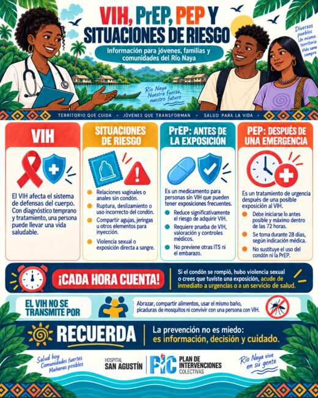
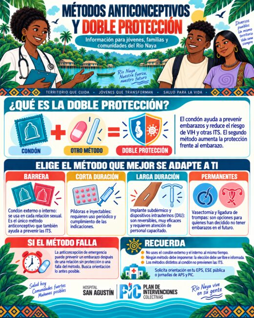
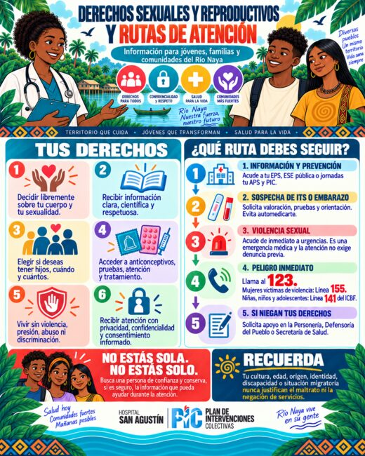

Información
Recibe información clara, confiable y fácil de comprender.
Salud sexual y reproductiva
Información clara, confiable y respetuosa para adolescentes, jóvenes, personas adultas, familias y comunidades del río Naya.
Este repositorio ofrece orientación para prevenir infecciones de transmisión sexual y embarazos no planeados, conocer los métodos anticonceptivos, identificar situaciones de riesgo y acceder oportunamente a servicios de salud.
Elige lo que necesitas
Toca una tarjeta para ir directamente al tema. Puedes avanzar en orden o consultar solamente la información que necesitas.
Tema 1
Tu cuerpo, tus decisiones y tu bienestar merecen respeto.
Recibe información clara, confiable y fácil de comprender.
Decide libremente sobre tu cuerpo, sexualidad y vida reproductiva.
Debe ser libre, claro, informado y puede retirarse en cualquier momento.
Tus preguntas y datos deben tratarse con confidencialidad.
Recibe atención sin discriminación por edad, origen, identidad, género, orientación sexual o condición social.
Nadie puede tocarte, presionarte, amenazarte o compartir contenido íntimo sin permiso.
Tema 2
Un preservativo, una relación, una sola vez.
No lo utilices si está vencido o la fecha no puede leerse.
Debe estar cerrado y sin perforaciones ni deterioro.
Comprueba que conserve una pequeña burbuja de aire.
Tema 3 · Atención oportuna
Consulta lo antes posible sobre anticoncepción de emergencia, PEP y pruebas. No te automediques.
Acude inmediatamente a urgencias. No fue tu culpa. Puedes llamar al 123, 155 o 141 si se trata de una niña, niño o adolescente.
Tema 4
Las infecciones de transmisión sexual pueden transmitirse principalmente durante relaciones vaginales, anales u orales. Muchas no presentan síntomas.
Por contacto sexual, algunos fluidos, lesiones o piel infectada; algunas también por sangre o durante el embarazo y parto.
Ardor al orinar, secreciones, llagas, ampollas, verrugas, picazón, dolor o sangrado inesperado.
Preservativo, pruebas, vacunación contra VPH y hepatitis B, y no compartir agujas.
Sífilis, gonorrea, clamidia, tricomoniasis, VPH, herpes genital, hepatitis B y VIH. Algunas pueden curarse y otras pueden tratarse y controlarse.
Tema 5
Prevención para personas sin VIH antes de posibles exposiciones. Requiere valoración y seguimiento.
Medida de emergencia después de una exposición. Debe iniciarse cuanto antes y no después de 72 horas.
Permite conocer el estado frente al VIH. El momento depende del tipo de prueba y su periodo ventana.
No se transmite por abrazos, alimentos, cubiertos, baños, sudor, convivencia cotidiana ni picaduras de mosquitos.
Una persona con VIH que toma tratamiento y mantiene una carga viral indetectable no transmite el VIH por vía sexual.
Tema 6
No existe un método perfecto para todas las personas. La elección depende de tu salud, preferencias, necesidades y proyecto de vida.
Implante, DIU de cobre y DIU hormonal. Son reversibles y no requieren recordar su uso diario.
Inyección, píldora, parche y anillo. Su efectividad depende del uso correcto y oportuno.
Preservativos externo e interno. Son los métodos que también ayudan a prevenir ITS.
Vasectomía y cirugía anticonceptiva femenina para quienes han decidido no tener hijos en el futuro.
Preservativo + otro método anticonceptivo.
Tema 7
Es un método hormonal, reversible y de larga duración que se coloca debajo de la piel del brazo por personal capacitado.
Recibe información sobre opciones, duración, efectos, medicamentos, consentimiento y fecha en que inicia la protección.
Puede cambiar la frecuencia, duración o cantidad del sangrado, e incluso presentarse ausencia de menstruación.
Ante dolor intenso, fiebre, enrojecimiento creciente, secreción, sangrado muy abundante, sospecha de embarazo o si no puedes sentir el implante.
Tema 8
Atención en el territorio
Orientación para acceder a los servicios de la E.S.E. Hospital San Agustín de Puerto Merizalde.
Dirígete inmediatamente al servicio de Urgencias de la sede asistencial en el corregimiento de Puerto Merizalde. Solicita valoración para profilaxis posexposición al VIH (PEP), anticoncepción de emergencia cuando corresponda, pruebas diagnósticas y atención integral.
No esperes: la PEP debe iniciarse lo antes posible y máximo dentro de las primeras 72 horas. La atención inicial de urgencias no debe retrasarse por trámites administrativos.
Llamar a emergencias: 123Para pruebas rápidas de ITS y VIH, citas de control, planificación familiar o implante subdérmico, comunícate directamente con la E.S.E.
Corregimiento de Puerto Merizalde, zona rural de Buenaventura.
Urgencias: atención permanente, todos los días.
Calle 2 No. 5B-70, Bajada Calle Bavaria.
Horario: lunes a viernes, de 8:00 a.m. a 12:00 m. y de 2:00 p.m. a 6:00 p.m.
gerencia@hospitalsanagustinese.gov.co
123 Emergencias155 Línea de orientación a mujeres141 Protección de niñas, niños y adolescentes - ICBF
Solicita apoyo en Atención al Usuario de la E.S.E., Personería, Defensoría del Pueblo o Secretaría Distrital de Salud.
Mira, aprende, descarga y comparte
Cada tema reúne un video informativo y un flyer que puedes abrir o descargar desde el celular.
Diferencia la prevención antes de una posible exposición y la atención de emergencia que debe iniciarse cuanto antes.

Ver flyer completoEl condón ayuda a prevenir ITS y, combinado con otro método, aumenta la protección frente a embarazos no planeados.

Ver flyer completoConoce tus derechos a decidir, recibir información, proteger tu privacidad y acceder a servicios sin discriminación.

Ver flyer completoRespuestas rápidas
Sí. Debe utilizarse antes de cualquier contacto sexual y mantenerse hasta el final.
No. La fricción puede favorecer que se rompan o deslicen.
Busca orientación lo antes posible sobre PEP, anticoncepción de emergencia y pruebas.
Sí. Muchas ITS no presentan señales. Una prueba y valoración profesional permiten conocer el diagnóstico.
No. VIH es el virus; sida es una etapa avanzada que puede prevenirse con diagnóstico y tratamiento oportunos.
PrEP se usa antes de posibles exposiciones; PEP después de una exposición reciente y debe iniciarse antes de 72 horas.
No. Previene embarazos. Para reducir el riesgo de ITS también se utiliza preservativo.
No. Es reversible y la fertilidad suele regresar rápidamente después de retirarlo.
No encontramos una pregunta con ese término.
{kind=link}
{kind=link}
{kind=link}